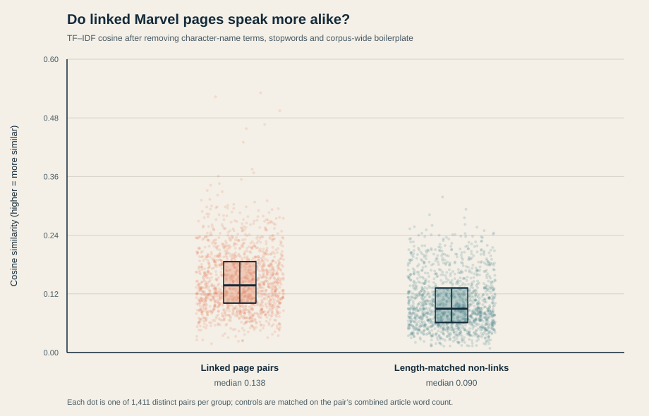

Question
Do directly linked Marvel character pages use more similar language than comparable non-linked pages?
What we did
We started with the course’s 303 Marvel character pages and 1,784 directed Wikipedia links. The node file contains each character’s page URL, but not the article text, so our script fetched the actual English Wikipedia extracts and recorded the exact revisions used. Twelve node entries currently redirect to another article or share the same page; we excluded those rather than let duplicate text create fake matches. That left 291 distinct article pages, including 274 that appear in the analyzed links.
Preprocessing, in brief: We lowercased and tokenized Unicode words, keeping internal hyphens and apostrophes; removed numeric-only tokens, English stopwords, all terms from Marvel character names, and terms present in at least half (or only one) of the pages. We did not lemmatize, so words such as “mutant” and “mutants” remain different. This keeps names and broad Wikipedia/Marvel boilerplate from dominating the comparison.
We built a TF–IDF bag-of-words vector for each page and compared vectors with cosine similarity. Each of the 1,411 distinct linked pairs was matched to one non-linked pair with the closest combined article word count, without reusing a control pair. We compare medians and paired differences descriptively, not as a causal test. Run python3 scripts/week5_analysis.py to regenerate the figure and summary from the pinned revisions in the source manifest; the downloaded text cache is not committed.
What we found

We expected linked pages to share more vocabulary because they often cover connected characters and stories. That is what we found: their median similarity was higher, and the difference survived removing character-name words and common terms. But the distributions overlap—a link does not guarantee that two pages use especially similar language.
What surprised us
The pattern did not disappear when we removed character names. Keeping those terms actually raises the median paired difference from 0.037 to 0.046, so names add some signal but are not the whole result. Stopwords and terms occurring in half or more of the pages were also removed; the matched pairs have exactly the same combined word count at the median.
The bigger surprise came from reading the pages behind the first run: ten different character entries had all redirected to the same Strikeforce: Morituri article, producing several perfect-looking similarities. We excluded those entries, along with two other retargeted pages, before calculating the results shown here. Even after that cleanup, linked pairs remain more similar—but less dramatically than the first result suggested.
That is a useful warning: a shared team, identity, or crossover can explain both a hyperlink and shared vocabulary. Names, stopwords, and very common boilerplate were filtered, and pair lengths were matched, but copied passages among the remaining pages, less frequent boilerplate, and formatting differences may still contribute. The comparison shows association, not that links cause similar writing.
Looking at the text
We opened the actual article revisions for two of the most similar non-redirect pairs. Their shared terms point to relationships that are visible in the passages—not just a high number produced by the model.
| Character / page | Pair score | Relevant language | Passage we checked | What it supports |
|---|---|---|---|---|
| Eddie Brock | 0.531 with Venom | symbiote; host | the most well-known host of the Venom symbiote |
The high overlap reflects Brock’s specific connection to Venom. |
| Venom | 0.531 with Eddie Brock | symbiote; host | Eddie Brock, its second host, with whom it first became Venom |
The reciprocal page text confirms the same character relationship. |
| Ch’od | 0.523 with Raza Longknife | Starjammers; Shi’ar | a founding member of the Starjammers |
The shared team is a concrete source of the vocabulary overlap. |
| Raza Longknife | 0.523 with Ch’od | Starjammers; Shi’ar | with Corsair, Hepzibah, and Ch'od |
Raza’s page independently describes his membership in that same group. |
Short excerpts from English Wikipedia contributors, under CC BY-SA 4.0. Each page name links to the exact revision analyzed; all 303 source revisions are listed in the source manifest.
Limitation
The hyperlink graph is the course’s August 2026 snapshot, while the page revisions were retrieved on 30 September 2026 (their individual timestamps range from March 2025 to that date). The revision IDs make this analysis repeatable, but the article text may not match what editors saw when the links were collected; our comparison is therefore not perfectly synchronized with the network snapshot.
Takeaway
Yes—with a caveat. Among the pages we could match cleanly, linked pairs tend to use more similar language than equally long non-linked pairs. The inspected examples show why: shared identities and teams create shared vocabulary too, so this is a pattern to interpret, not a causal claim.